ALWAYSOLWIS STYLE
Una semana, un bolso para cada día

Café con azul marino,
para el día que no para
El morral que aguanta portátil, almuerzo y la reunión de las seis sin verse de oficina.
Black Work · Café oscuro
Cuero vegano · porta Pc de 15" · porta libros interno
Cuero veganoCon herrajes de acero
Porta Pc 15"Acolchado y con correa
Kit de limpiezaIncluido en cada bolso
4 mesesDe garantía real
Los bolsos
Recorre la colección
Todos los bolsos: cuero vegano · 4 meses de garantía · kit de limpieza incluido · envíos a toda Colombia
La magia está en los detalles
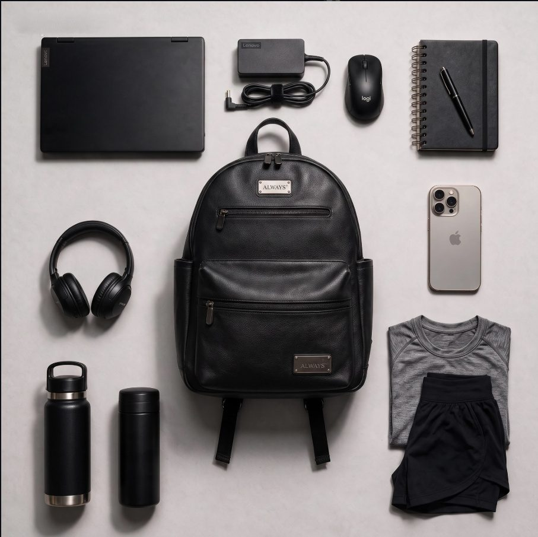
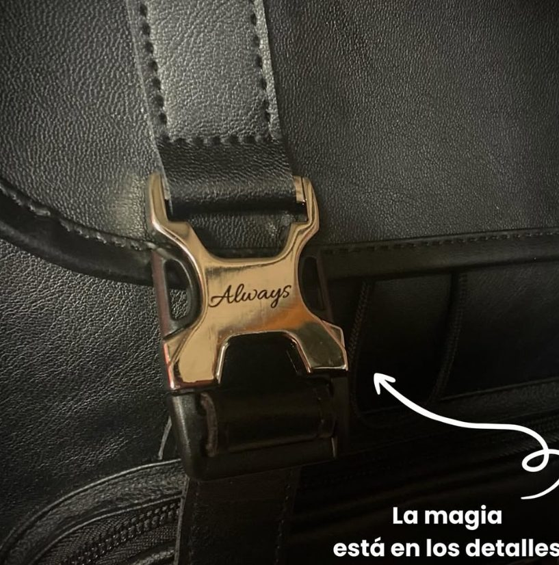
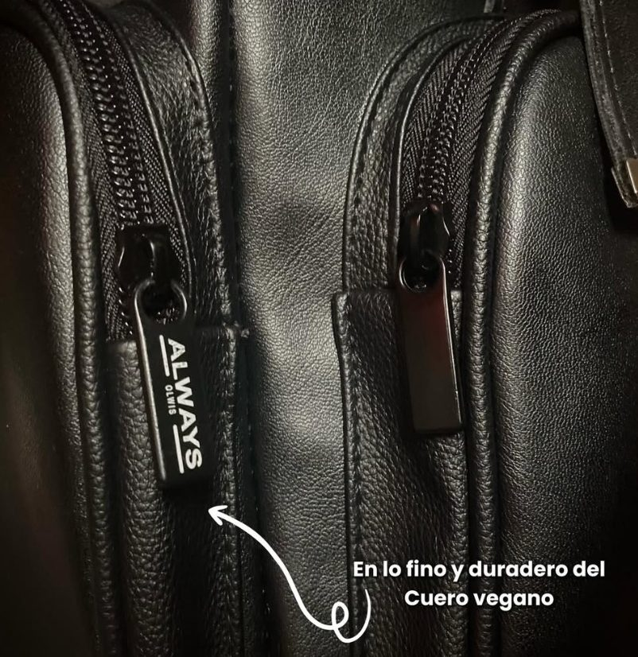
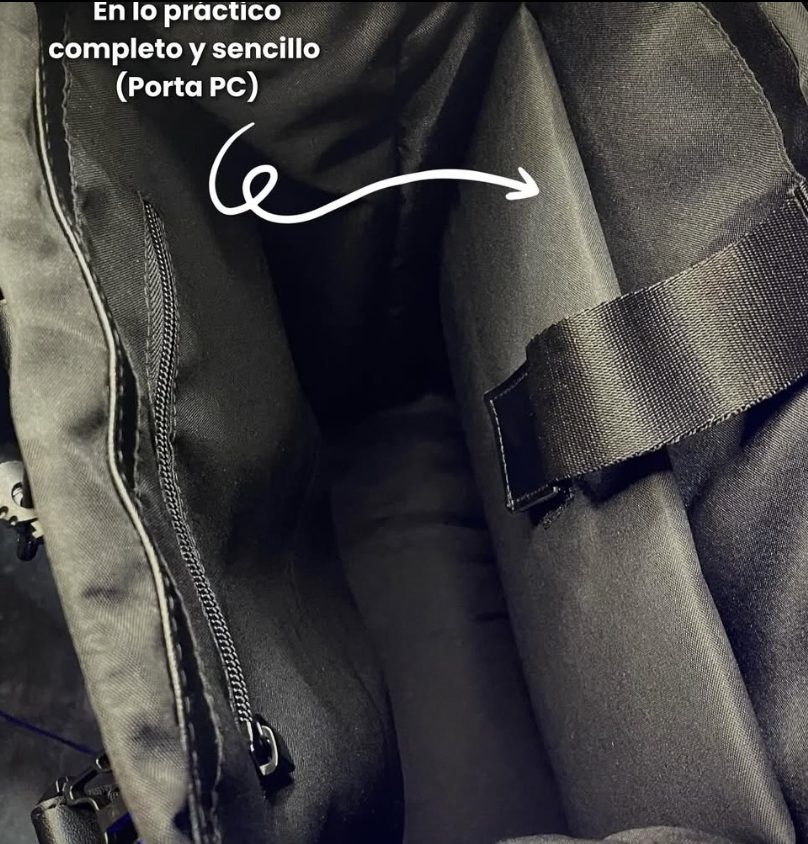
Campaña · Colección de lujo, Medellín
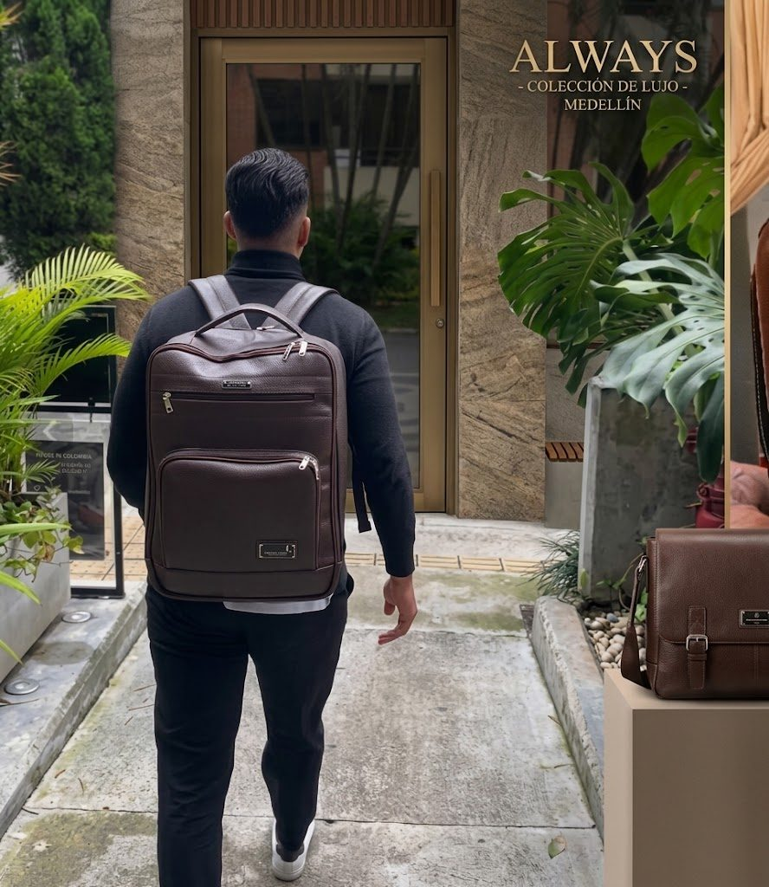
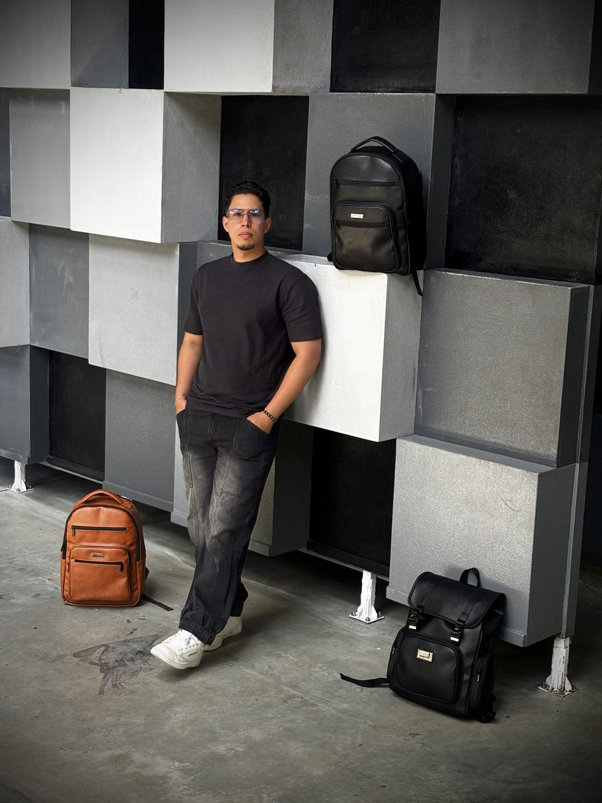
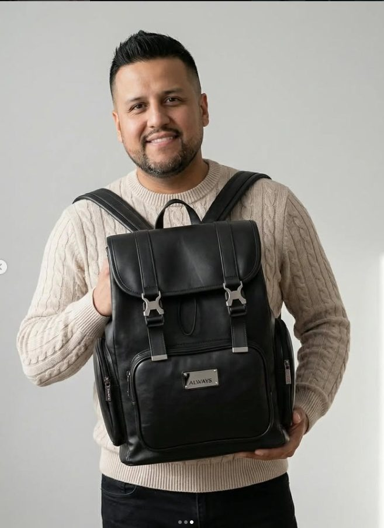
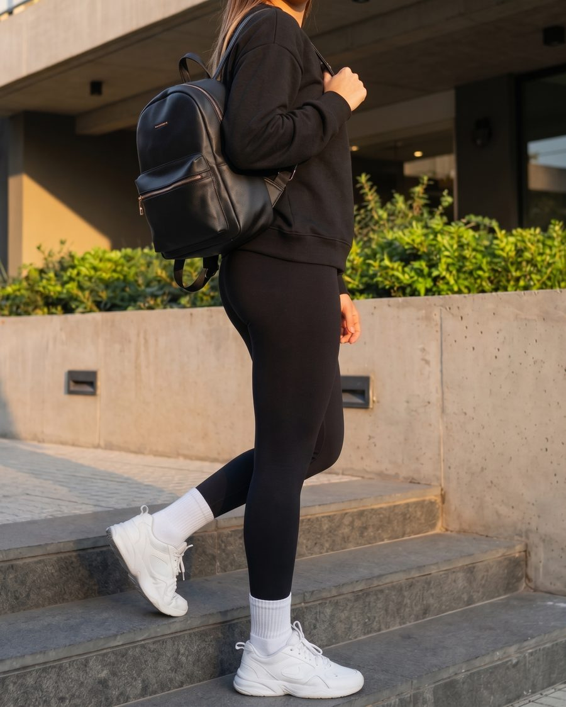
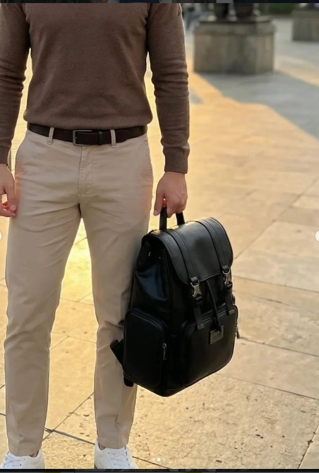
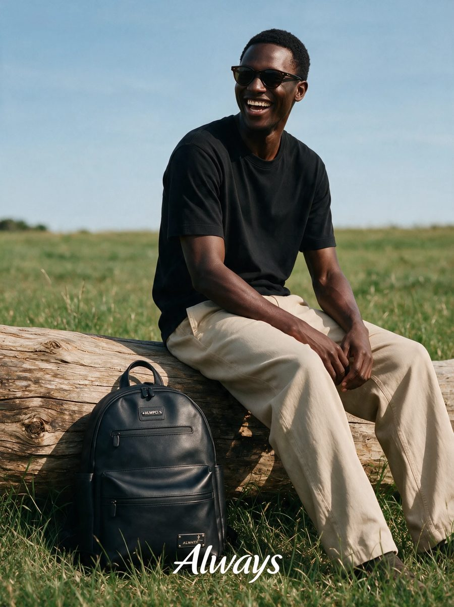
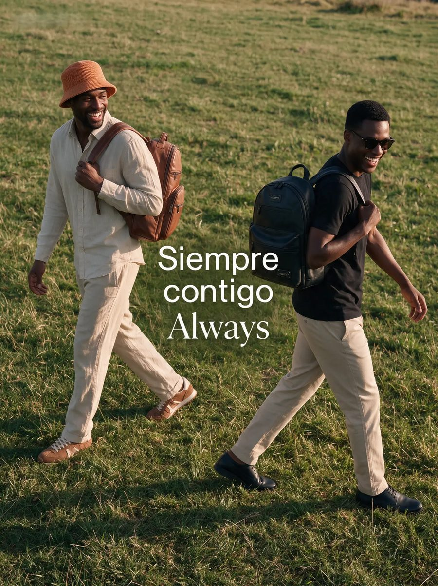
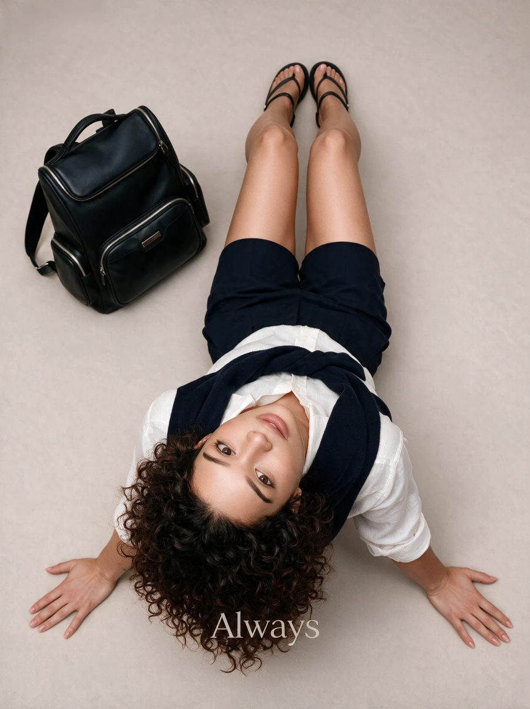
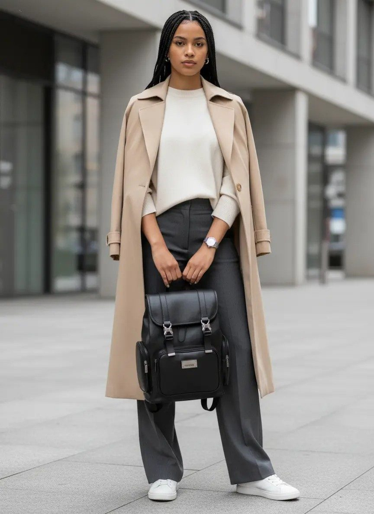
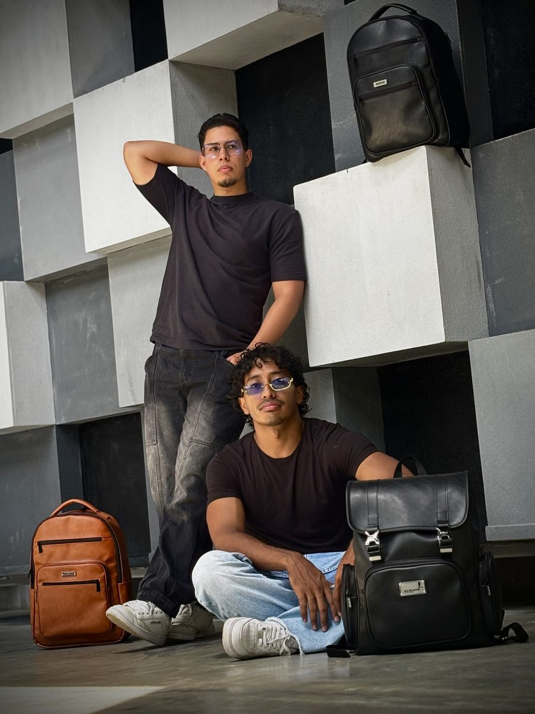